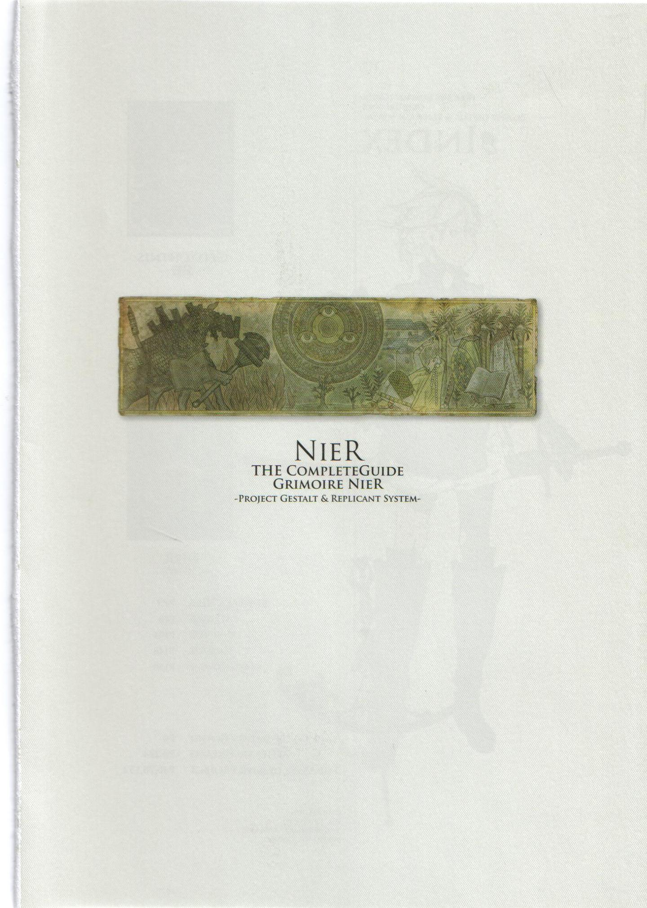
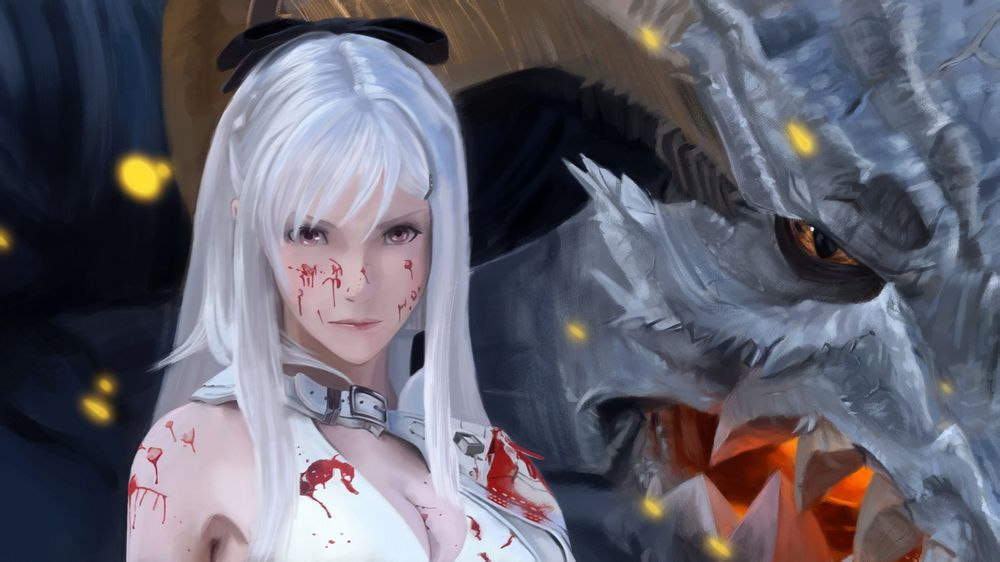

世界

要搞懂尼尔的世界观和剧情首先搞懂龙背上的骑兵是尼尔的前传..而尼尔是龙背上的骑兵很多年后的事情..龙背上的骑兵3也就是红眼病的起源 尼尔和龙背的世界观是一起的..这点制作人在做尼尔的时候肯定了.龙背就是尼尔的前传性质.所以想搞懂尼尔首先搞懂龙背...
少女眼中长出了一朵鲜红的花，花给予了她不死的力量..
但代价是花开放的时候世界会毁灭那一刻
她也真正成为了故事的主角Zero..
Nier ニーアPS3版的主人公。对自己唯一的亲人——妹妹，十分的重视。为了治疗她的黑文病而踏上了旅途，有时候甚至会为了她而做出一些粗暴的言行举动。
360版的主人公对自己的女儿十分的爱护和重视。正义感，温柔，坚强具备，但却意外的有着女儿控的一面。
Kaine カイネ
左半身被魔物所侵袭。人称“魔物凭依”的女战士。双性人，从小就被一直欺负，正是这样养成了她反动的性格，另外为了防止左半身魔物的侵攻，她喜欢穿着一些露出度比较高的服装。与外表不同的是，她的态度十分粗野乱暴，不拘小节而且胃口还很大...武器是双刀。
Grimoire Weiss 白の书
“封印的书物”，由于某个事件和主人公相遇，并一起开始了旅行。十分的博学，知道世界的一切，并经常卖弄，但是却意外的有其可爱的一面，让人讨厌不起来...记忆的一部分似乎丧失了，其真正身份不明。
NO.7 実験兵器7号
由于某个事件和主人公一同旅行，是个像骸骨一样的迷之生物。轻飘飘的浮于空中，并能操纵强大的魔力，对主人公的战斗起到了巨大的辅助作用。
Debol&Popol デボル&ポポル
主人公村中的双胞胎姐妹。对Nier和Yonah十分的理解和支持。Popol在村中担任图书馆的馆长，性情温和，举止优雅而且还十分坚强。相对的，Debol则属于泼辣好动的性格，喜爱唱歌，经常在村内的喷水处唱歌。
人物
怎么说呢，尼尔这个剧情背景相当复杂，宇宙观非常宏大，而且比你想象中的要宏大的多。因为牵扯到了龙背上的骑兵（誓血龙骑士，以下简称DOD）1和3的剧情。
总之大体的时间顺序是这样的：
龙背上的骑兵3----》龙背上的骑兵1（根据结局的分歧导致了不同的事件）-----》龙背上的骑兵2 或 尼尔1。
根据DOD3的A和B的结局提示，一弟创造出了DOD1里的天使教会，而零的花则可以操控红眼病患者（尼尔1里的魔王就是这种红眼病患者）。DOD3的D结局里，因旧世界的记录者的干预，导致了花和咏唱者被送往异世界（猜测：可能是尼尔的世界！），而这个记录者后被证实其真身是量产型机器人（猜测：很可能与尼尔2有关联）。
Dod1里，男主凯姆和红龙签下契约要保护自己的妹妹，进而和天使教会发生冲突导致赤色天空降临，天使军团降临要毁灭世界。在E结局里，母天使（白巨人）通过开挂把凯姆和红龙（还有母天使自己）传送到了2003年的日本新宿（也就是尼尔的世界）。
尼尔的世界开始：>>>>>>>>>
关于
